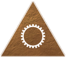
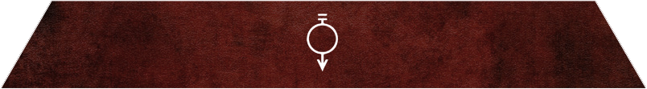
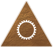
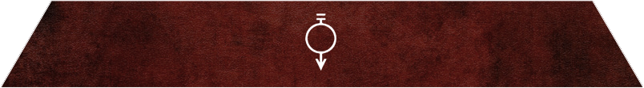

THE HIERARCHY OF COLOURS
When the first colonists ventured forth from Earth to make their home on the moon, they created a hierarchy for labor. In time, they improved this hierarchy through genetic and surgical manipulation. The result was a colour coded Society of perfect efficiency, dominated by a superior breed of humanity, the Golds. It was they who rebelled against Earth, conquered her, and sowed the seeds of their Society across the Solar System.
Click a sigil to learn more
GOLD
Fiercely intelligent, tall, sculpted, and beautiful, the Golds are the apotheosis of humanity. Ruthless and power-hungry, they model their Society after the ancient Greeks and Romans, exerting their power over the lower colours to keep them subjugated and servile.
SILVER
An upper tier colour, the Silvers are financiers and businessmen who man the stock markets and trading grounds of the Society.
WHITE
Holy men and women, Whites oversee the sacred traditions and religion of the Society.
COPPER
Administrators, lawyers, and bureaucrats of the Society, Coppers are often in charge of lower colours and placed in managerial positions.
BLUE
Bred to crew and pilot starships, Blues are astronavigators and students of interplanetary warfare. They have sub-dermal implants that synchronise with their starships to allow orders to be carried out at the speed of thought, and live in a logical world removed from emotion.
YELLOW
Experts in human and natural sciences, Yellows are the doctors, psychologists, biologists and sociologists of mankind.
GREEN
As programmers and developers of technology, Greens are experts in mathematics and physics.
VIOLET
More classically inclined than their high-colour brethren, Violets are the artisans of the Society. They specialise in creating things of beauty, from paintings to symphonies to plays. Certain Violets are master Carvers who tailor living creatures to their own design.
ORANGE
Engineers and mechanics, Oranges are most often support crew on starships or repairmen in cities.
GREY
Trained in combat, Greys are the police force and military personnel of the Society, bred to enforce the rigid structure of the hierarchy.
BROWN
Most often found in domestic settings, Browns are servants, cooks and house staff for homes, businesses and social institutions.
OBSIDIAN
Massive warriors bred as living weapons, Obsidians are raised on the poles of the planets, barely surviving the harsh tundras to reach adulthood. They are a harsh people who value strength and resilience. In the past, the Obsidian attempted an uprising against Gold. In retaliation, the Golds took away their technology and decimated their population. The Obsidian were indoctrinated with Norse mythology and told that the Golds were there gods. Now the deceived Obsidian live to serve their "Sun-born" as bodyguards, gladiators, and personal attack dogs.
PINK
Bred and trained for the arts of physical pleasure, Pinks are unparalleled in beauty. Their bodies are the most delicate of all the colours. They are often bought and sold as slaves for high colours.
RED
Unskilled manual labourers, Reds make up the majority of the Society. Working in areas from construction to mining, they are a people used to hardship. Their culture values family and serving one's clan above all else. They are a people of song and dance who feel their connection to their ancestors very deeply. Reds believe that after death one's spirit enters the Vale, a paradise where they can finally rest, and from where all those who have died before them now watch.
 


